Follow along with developmental updates on Robotics, Software, and Science.
Highlighted Posts
Jan 15, 2026Lab Automation
Lab Simulation
We built Maestro to de-risk lab automation orchestration before we touch hardware.
The goal is simple: run workflows repeatedly, see where timing and coordination break, and fix that loop before it becomes a hardware problem.
At the core is a deterministic simulation engine that advances in fixed 100ms ticks.
Nodes (robots, stations, instruments) are small state machines that emit telemetry events as they execute commands.
Because time advances in discrete ticks, we can reproduce “exactly what happened” from the same initial state and inputs — which is ideal for performance questions and corner cases.
Control is event-driven.
The orchestrator talks to the simulation over gRPC, issues commands, and waits on telemetry (arrived, plate picked, command rejected) rather than polling or sleeping.
In parallel, the browser UI connects to two WebSocket streams: one for raw telemetry and one for orchestrator state.
That separation is intentional: it keeps the UI useful whether the backend is a simulation or real hardware.
We also inject faults on purpose to test recovery behavior early, while it’s cheap to fix.
The same control surface can later drive real systems, so this isn’t throwaway code.
Next up is expanding scenario coverage and tightening runtime metrics so we can compare changes run-to-run.
Protein Dojo makes protein design feel hands-on instead of “read papers and hope.”
For small teams iterating on binders, the difference is loop speed: get to a concrete design decision quickly, with enough feedback to learn what actually changed.
Under the hood it’s grounded in real structures.
You can explore an actual complex (e.g. SARS‑CoV‑2 Spike RBD bound to human ACE2) pulled from the PDB, then design against a specific interface.
The workflow is intentionally structured: Explore → Design → Evaluate → Submit.
That’s where the “cool” becomes useful — you can move between 3D geometry and residue-level sequence changes without losing context.
The evaluation loop is the teacher.
Make a change, re-evaluate, and see why it helped or hurt: clashes, polarity, surface complementarity, and whether the design still looks physically plausible.
Next up is tightening the evaluation signal so iteration feels even more like engineering and less like guesswork.
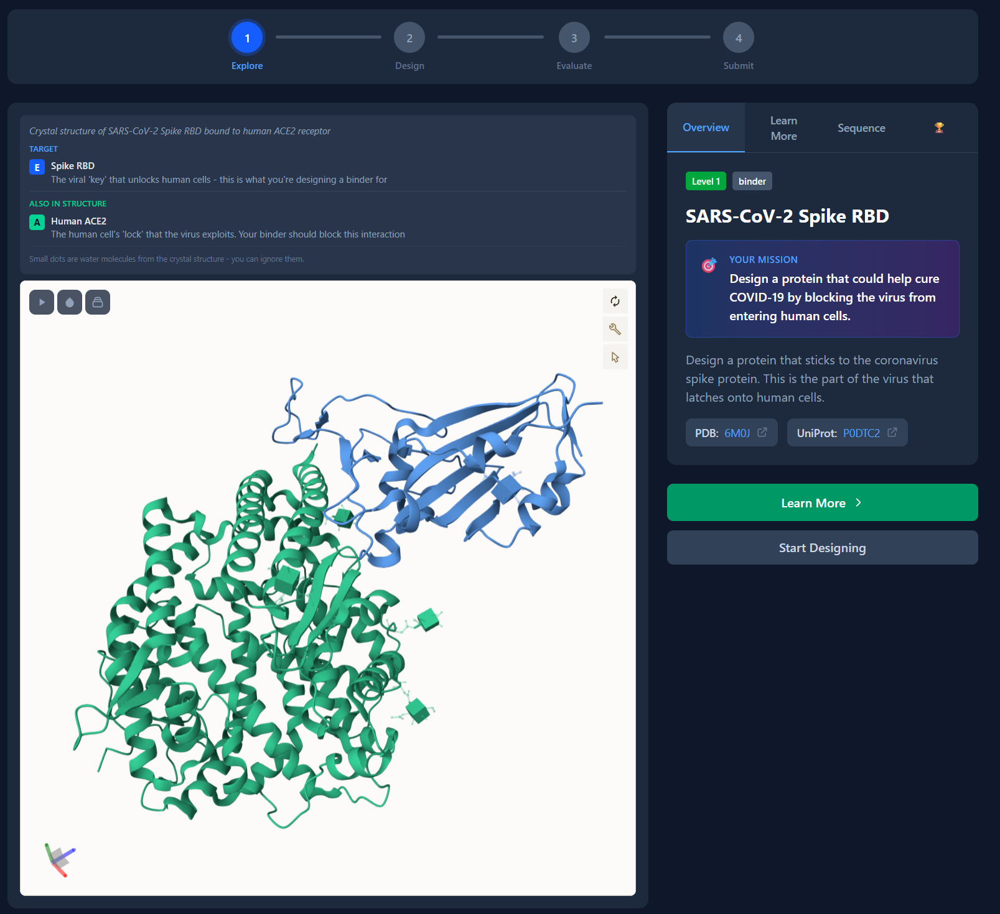
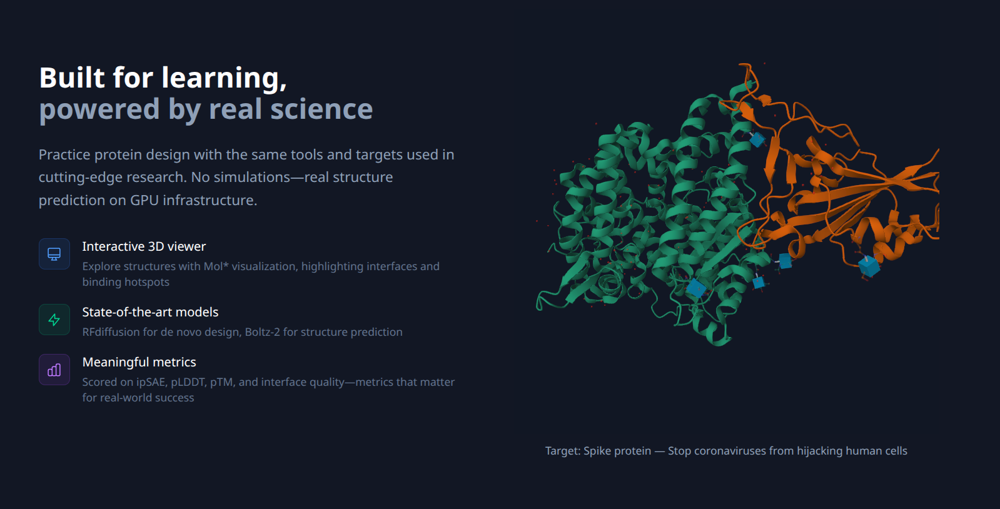
Jan 5, 2026Rail Robot - Holiday Hackathon
Turning A Demo Into Something Reliable
We’re turning a working demo into a system that’s predictable under stress.
Reliability is the goal: repeatable behavior, clearer failure modes, and a safety path that doesn’t depend on “everything else behaving.”
The current loop runs on a small Linux SBC because it’s convenient for iteration.
Longer-term we’ll likely split timing-critical motor control onto a dedicated controller, and keep Linux focused on the UI, logging, and coordination.
The architecture we’re converging on is three layers:
hardware I/O and timing (step pulses, servo PWM, limit inputs),
motion planning (ramps/segments that respect the mechanics),
and orchestration (station state machine + traceable logs of what happened and why).
The key rule is non-blocking control.
Everything advances on a monotonic tick with explicit state transitions, so adding sensors later becomes “handle new evidence” rather than “rewrite the loop.”
Next up is closing the feedback gaps: station ID, lift position feedback, and a hard stop path that’s independent of application logic.
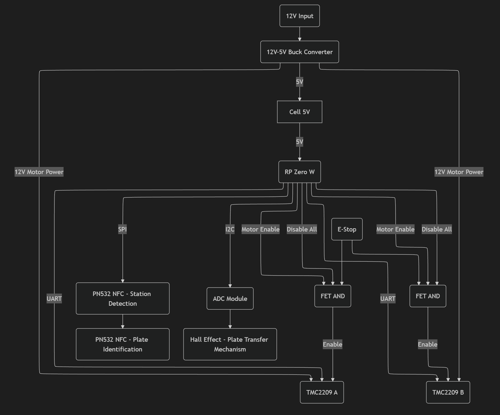
Jan 3, 2026Rail Robot - Holiday Hackathon
A First End To End Demo
The cart picks up a plate, rides the rail, and drops it off — end to end.
This started as a holiday hackathon build.
The point was to prove we can go from sketch → mechanism → control loop → repeatable motion quickly, then iterate toward robustness.
The demo is intentionally simple: two stations, a lift, and one controller loop sequencing the whole operation.
That simplicity is useful because it makes changes legible — update one variable (mechanism, tuning, software) and you immediately see the effect.
Under the hood it’s one SBC running a tight C++ loop: generate step pulses, shape acceleration/deceleration so motion stays smooth, and sequence a station state machine.
We’re intentionally light on sensors right now so we can pin down the fundamentals before adding complexity.
The lift is a servo-driven cam with no latching and no extra feedback, which makes the next steps obvious: plate presence sensing, lift position feedback, and a safety stop path that doesn’t depend on application code.
Next up is adding feedback without losing simplicity: minimal sensors, clear failure modes, and a safer stop-everything path.
Jan 2, 2026Rail Robot - Holiday Hackathon
A Simple Station
A station is a small landing pad that makes placement predictable.
The goal is repeatability: when the cart arrives, the plate lands in the same place every time, so the rest of the system can be simpler.
Ours is a 3D-printed part with a guiding lip and an overhang that lets the cart position a plate above the station and lower into a known target.
It’s intentionally modular so we can place multiple stations along the rail without redesigning the system.
Later we can add sensing and locking, but this baseline geometry is the foundation for reliable demos and clean integration tests.
Next up is adding just enough sensing to detect “plate present / plate absent” without complicating the mechanism.
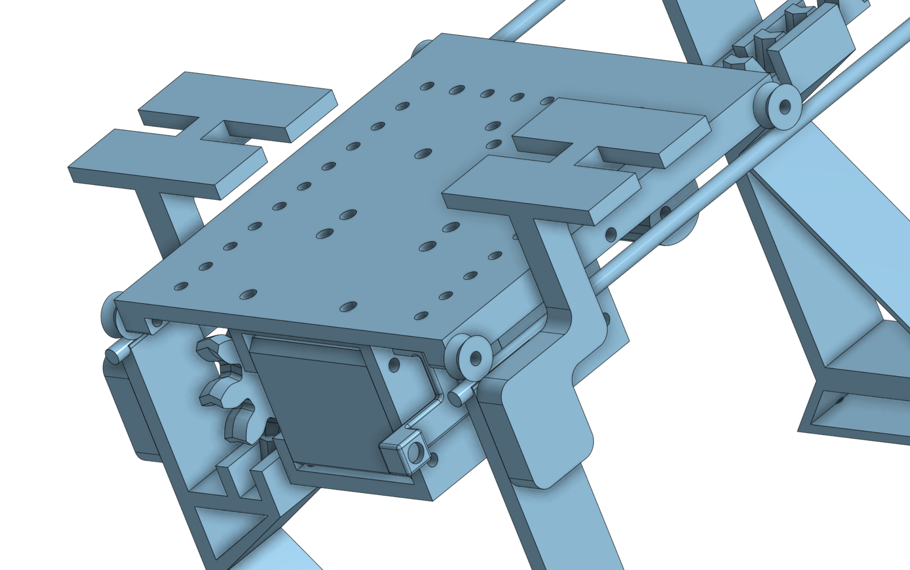
Jan 1, 2026Rail Robot - Holiday Hackathon
A Better Lift Mechanism
We replaced a scissor lift with a compact servo-driven cam lift.
The goal is controlled motion: less flex, less torque on printed parts, and a lift path that’s smooth enough to keep plates stable.
The scissor version looked fine in CAD but flexed too much in the printed assembly and loaded the plastic in the wrong ways.
The cam lift is stiffer and simpler to tune because the cam profile can shape acceleration/deceleration mechanically, not just in software.
It’s also a better base for feedback: adding a position sensor or a hard stop is straightforward compared to debugging a flexy linkage.
Next up is adding lift position feedback so the controller can detect “not where expected” and react safely.
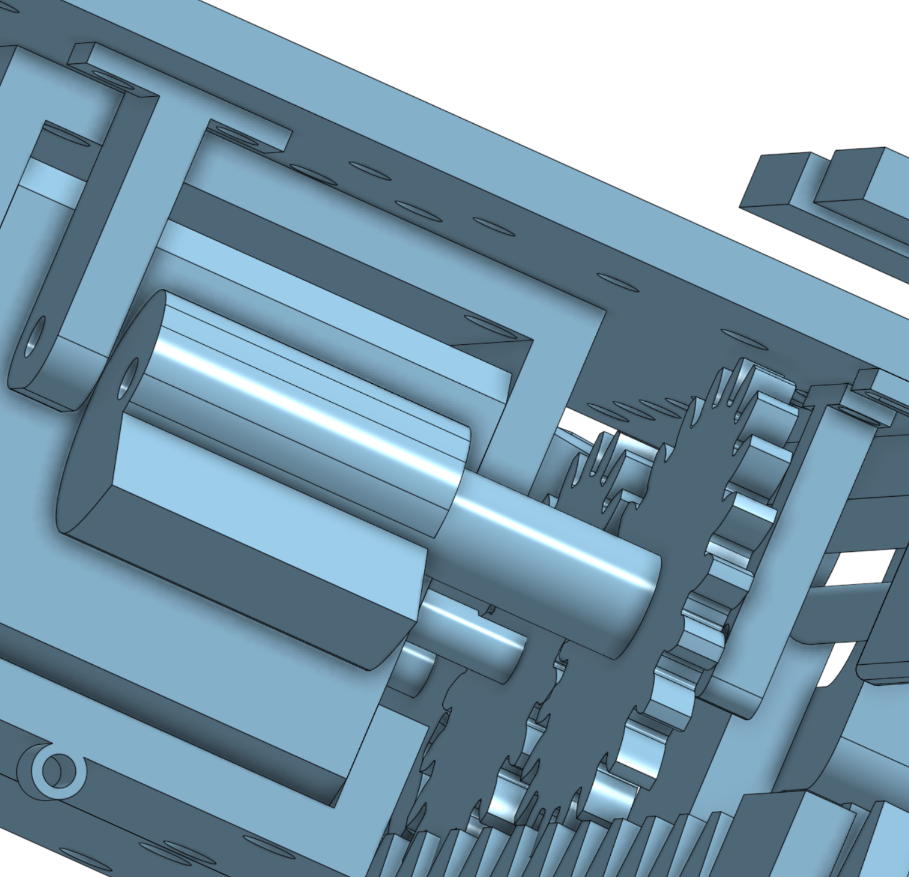
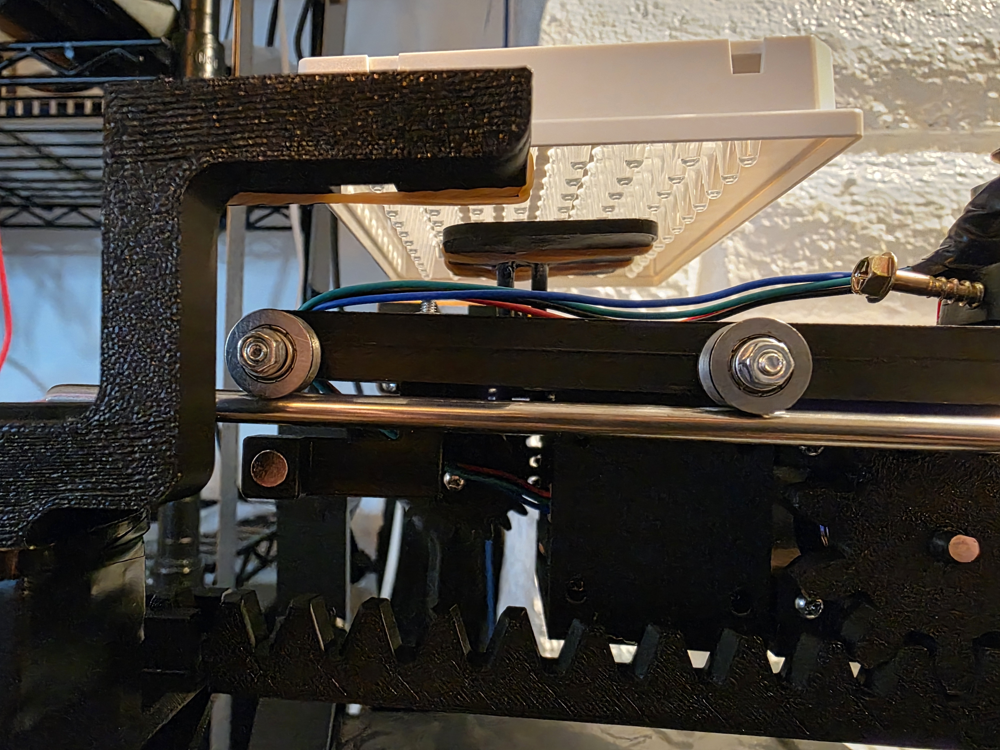
Dec 27, 2025Rail Robot - Holiday Hackathon
Wiring That Survives Real Life
We cleaned up wiring so iteration doesn’t come with a reliability tax.
The goal is stable debugging: change one thing, observe the effect, and avoid introducing new failures from loose jumpers and tangled cables.
The breadboard era is over.
We moved to perfboard with headers for 12V motor power, stepper phases, and station reed switches, and routed moving wires so they can’t snag during motion.
The bigger lesson is that moving wiring is a design problem.
Suspending the stepper phase wires above the rail immediately forces the right production questions (tethered cart vs. power-from-rail, where the controller should live) while keeping the demo simple.
Next up is wiring and connectors that support fault isolation and safe shutdown, not just “it runs.”
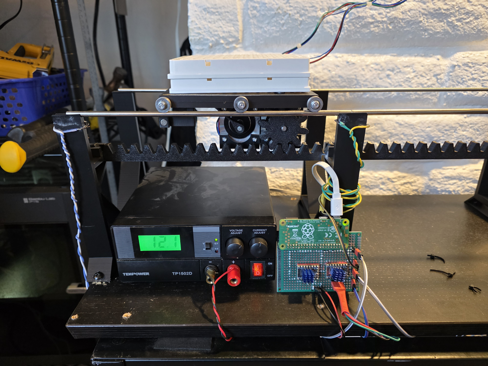
Everything now breaks out cleanly, which makes debugging (and reconfiguring) much less painful.
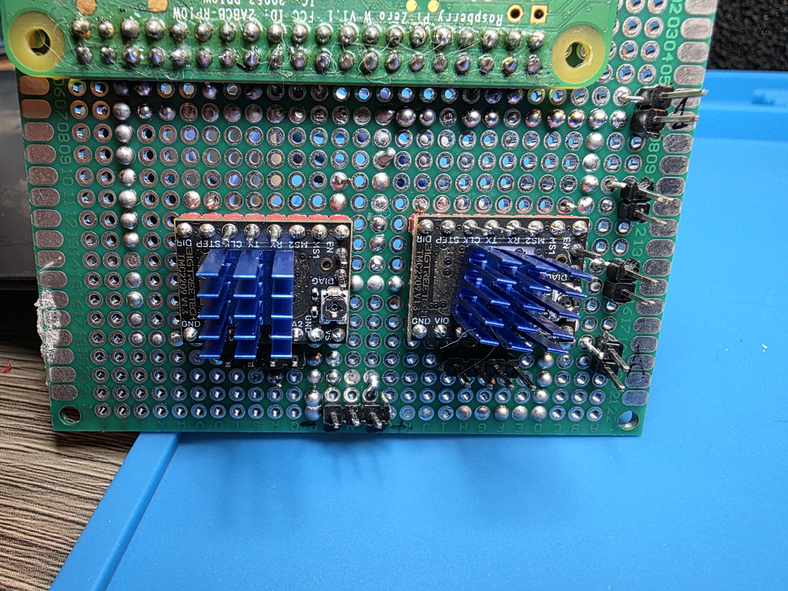
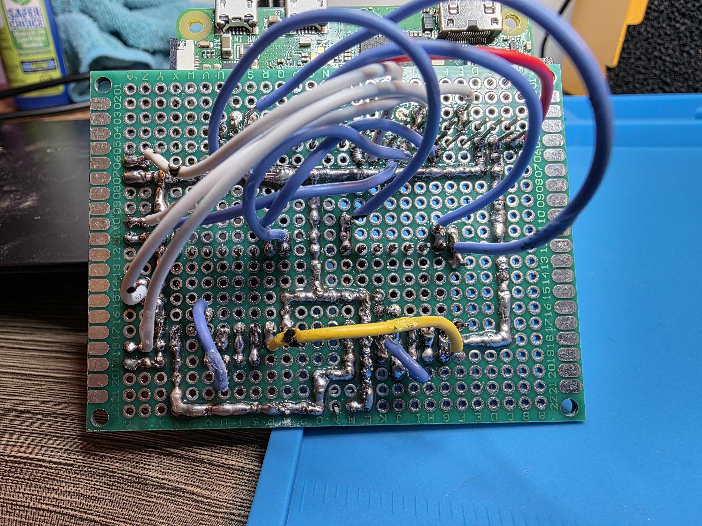
Dec 26, 2025Rail Robot - Holiday Hackathon
Getting The Rail Moving Fast
We pushed rail speed to find the real limits, not the comfortable ones.
The constraint shows up quickly: aggressive acceleration creates torque that can lift the cart off the track, so mechanical design and packaging are the next wins.
On the control side we split responsibilities:
a low-level stepper controller generates the pulse train and handles accel/decel ramps, while a higher-level position controller runs the station/direction state machine.
That separation keeps timing predictable and makes it clear where to add feedback later.
Next up is tightening the mechanical envelope (torque, clamping, mass distribution) so software can safely ask for more speed.
Dec 21, 2025Rail Robot - Holiday Hackathon
Arguing In 3D Before Printing
We modeled the whole mechanism in CAD so we could trade time in software for fewer reprints.
The goal is risk reduction: catch interference, bad load paths, and packaging mistakes before the physical pile-up on the bench.
The rails and bearing wheels are the only truly fixed parts; almost everything else is printable.
Building the system as sub-assemblies made it easier to reason about actuator placement, gear rail location, and clearances before we committed to a layout.
CAD also surfaced constraints early.
Servo cable length pushed us to keep the SBC off-cart for initial testing, and the first scissor lift load path made it clear we needed a redesign to reduce torque on printed parts.
Next up is iterating the packaging so the mechanical stack and wiring routes support reliable motion, not just first-time assembly.
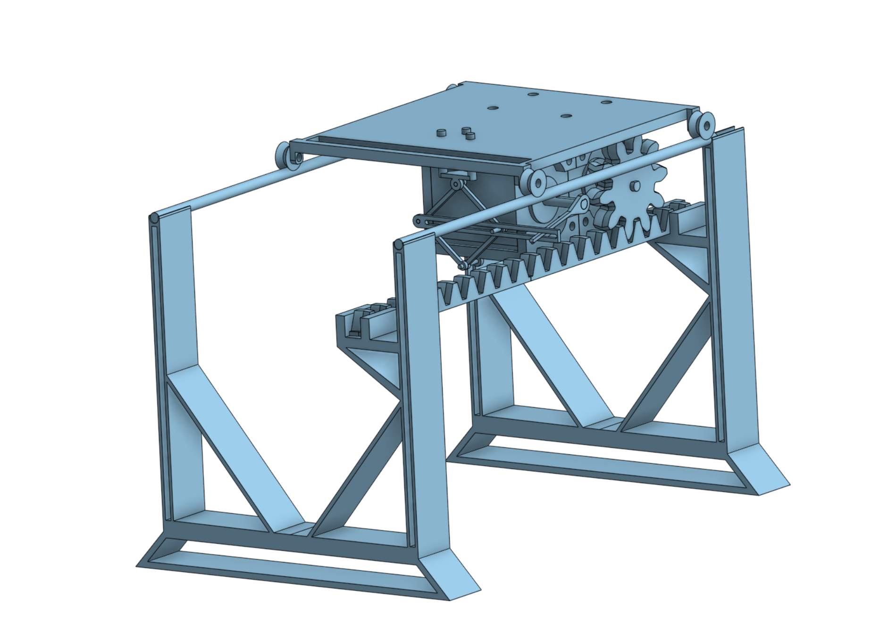
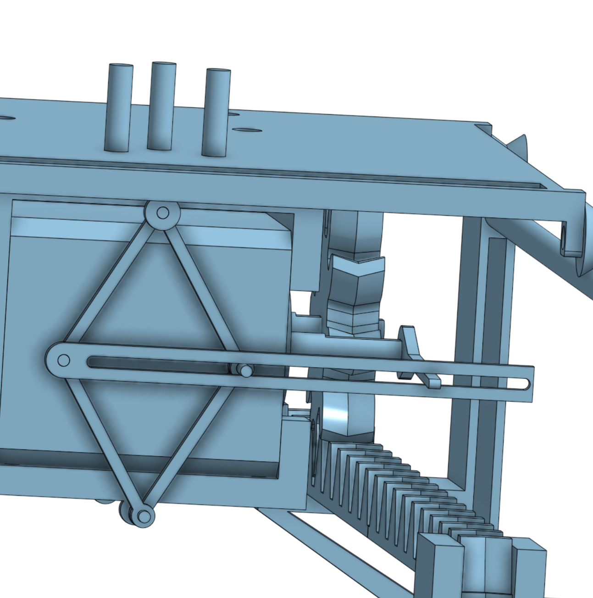
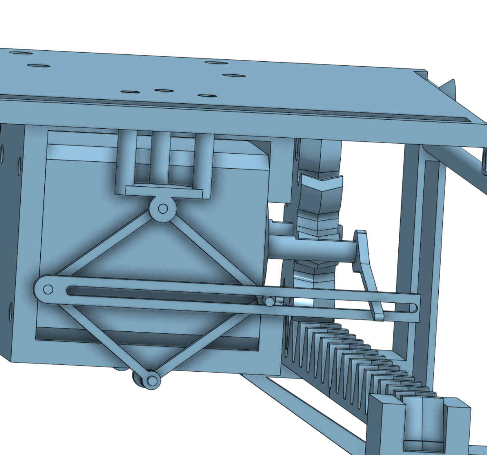
Dec 18, 2025Rail Robot - Holiday Hackathon
The First Sketches
The original idea: move plates like a tiny factory line instead of a fancy robot arm.
The goal was to learn fast: validate the motion system and handoff mechanics before we invest in a more complex automation layout.
The plan was straightforward: buy metal rails, suspend them on printed stands, and keep the cart’s top surface dedicated to holding a plate.
Everything else (controller, actuators, lift) hangs underneath so stations can overhang the track and the cart can deposit/pick up without extra mechanisms at each station.
The earliest lift concept was a spooling/scissor setup.
It got us moving quickly and surfaced the real constraints early: torque, rigidity, and cable management.
Next up is turning the sketches into CAD so we can converge on a printable, assemblable stack.